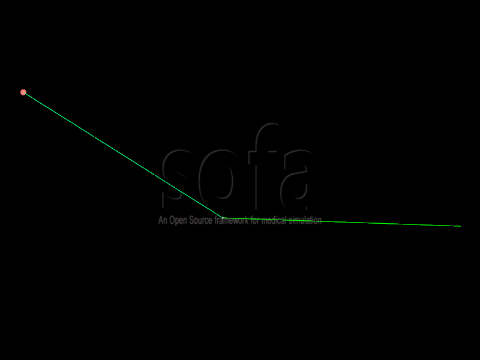
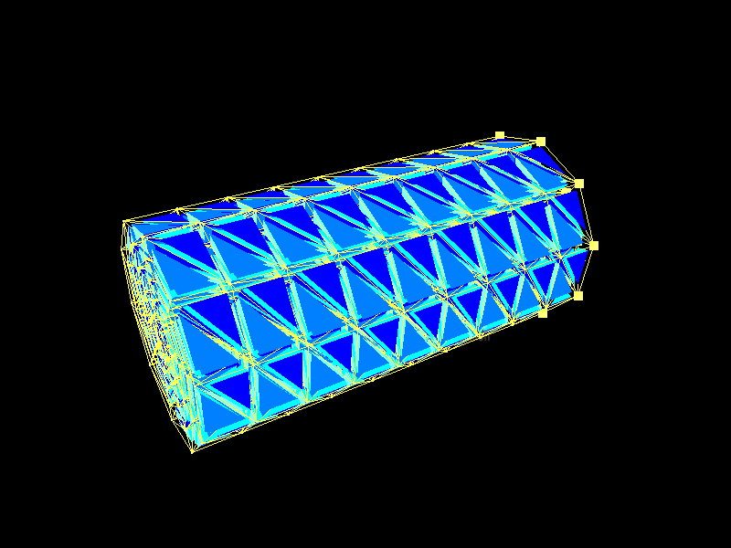

Step by Step Tutorials
|  |  |
 |
| Pendulum Creation | Scene Creation | Topological Mapping |
Description
In this set of tutorials, we will construct scenes from scratch, step by step.
The first Tutorial is about the creation of a Pendulum involving two simulated objects: we will rely on a mass spring system to simulate internal and external forces.
In the second tutorial, we will simulate the collision of a deformable object against a floor. We will present how the collision pipeline works, and how models can be visually and mechanically. This concept of mapping is really central in Sofa, and is used in almost all our scenes.